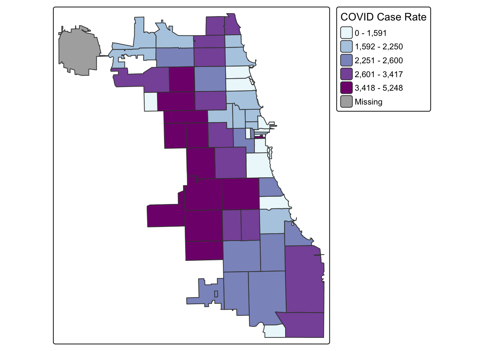
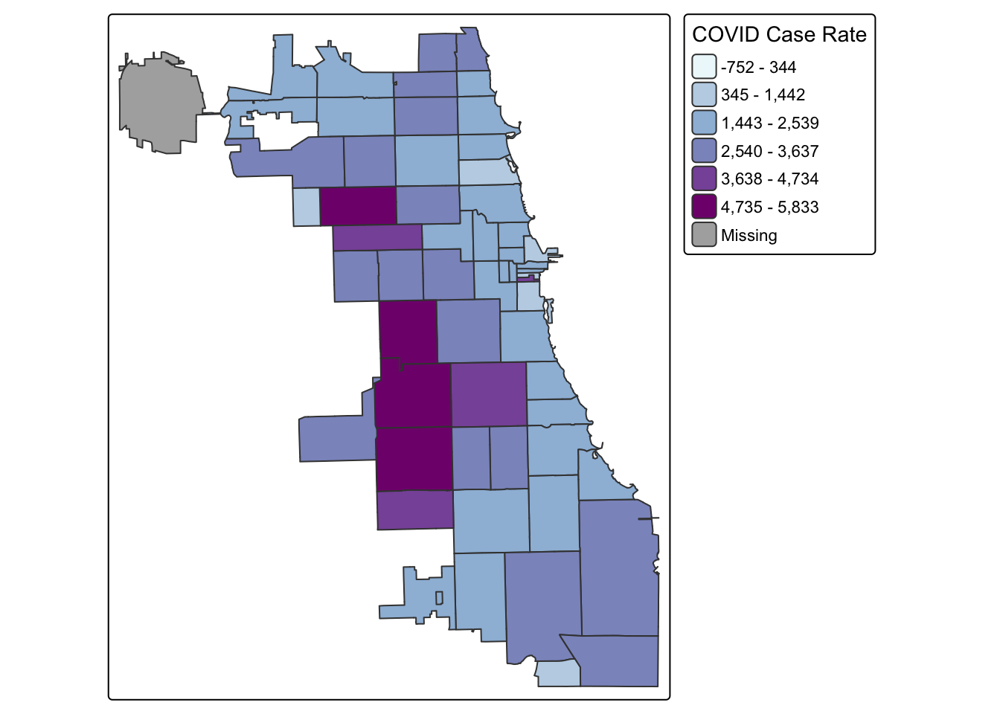
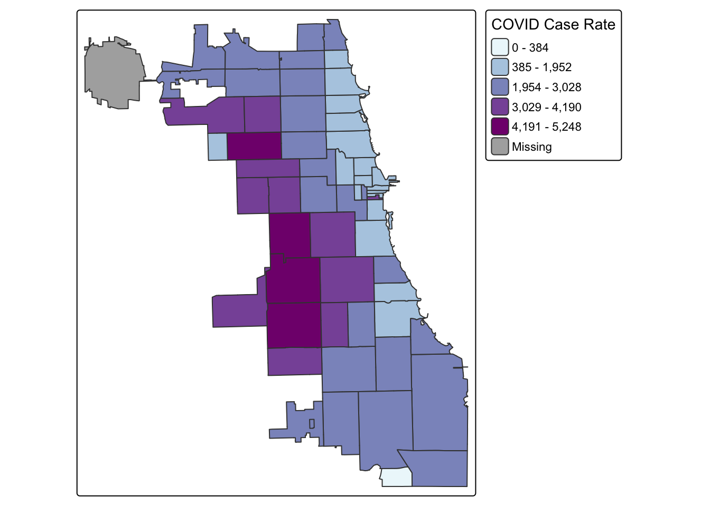
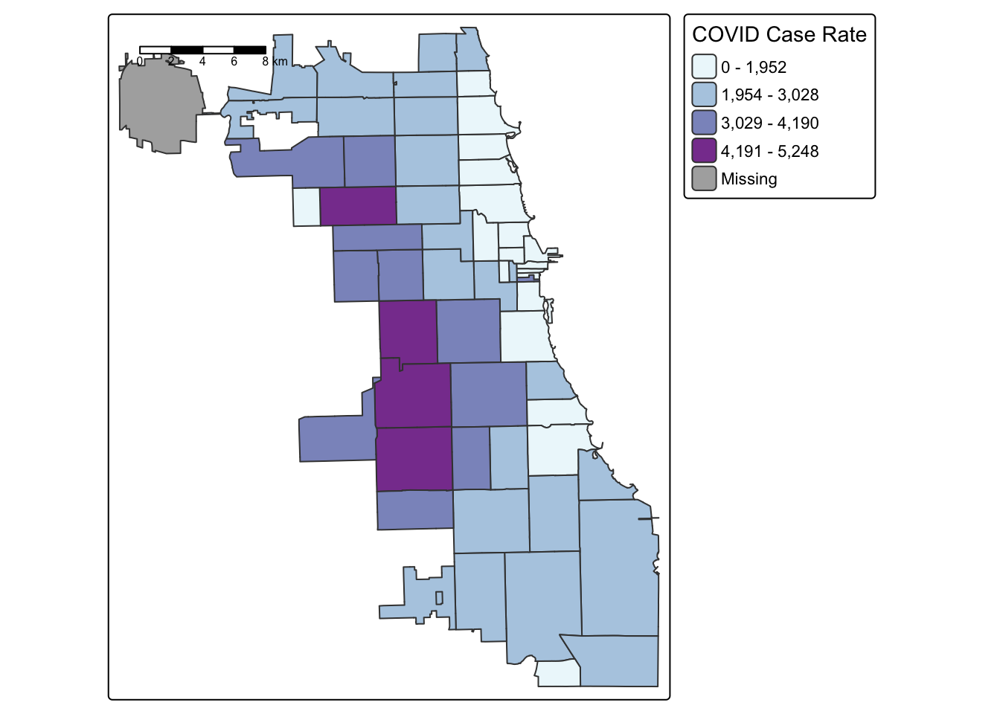
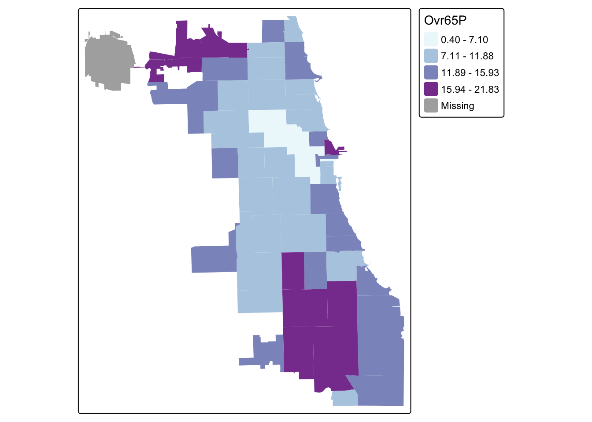
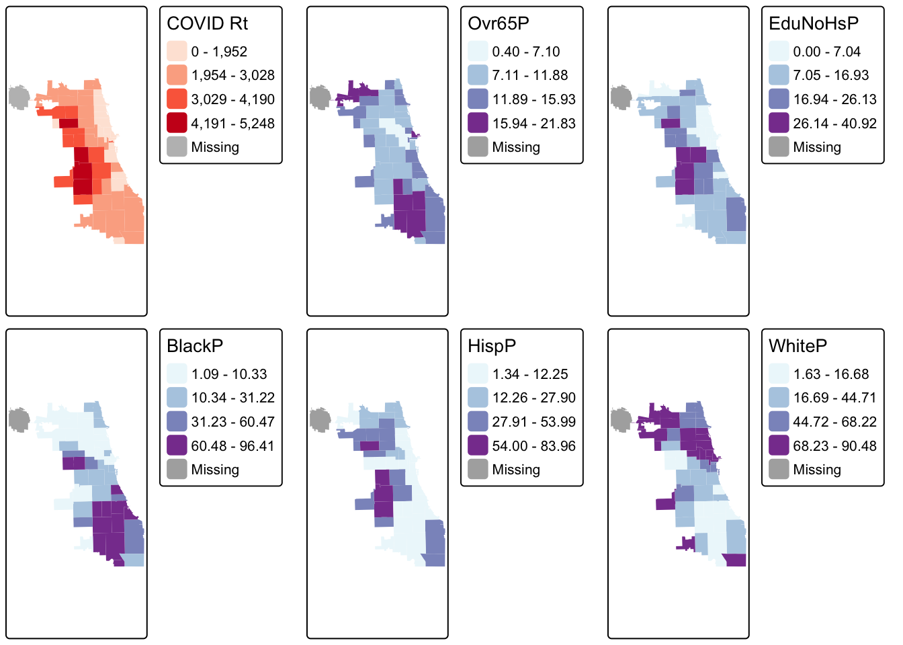

2 Map Neighborhoods
When considering the health of persons, we have to also consider the neighborhood environment. Sometimes this is looking at neighborhood level health outcomes, like premature mortality at the census tract scale, or cumulative COVID rates by zip code. Sometimes we’re interested in neighborhood factors like poverty, access to affordable housing, or distance to nearest health provider, or pollution-emitting facility. These measurements of the “social determinants of health” at the neighborhood scale are increasingly urgent in modern public health thinking, and are thought to drive and/or reinforce racial, social, and spatial inequity
In this module, we’ll learn about the basics of thematic mapping – known as choropleth mapping – to visualize neighborhood level health phenomena. This will allow you to begin the process of exploratory spatial data analysis and hypothesis generation & refinement.
2.1 Clean Attribute Data
Let’s consider COVID-19 cases by zip code in Chicago. We’ll upload and inspect a summary of cases from the Chicago Data Portal first:
## ZIP.Code Week.Number Week.Start Week.End Cases...Weekly Cases...Cumulative Case.Rate...Weekly
## 1 60603 39 09/20/2020 09/26/2020 0 13 0
## 2 60604 39 09/20/2020 09/26/2020 0 31 0
## 3 60611 16 04/12/2020 04/18/2020 8 72 25
## 4 60611 15 04/05/2020 04/11/2020 7 64 22
## 5 60615 11 03/08/2020 03/14/2020 NA NA NA
## 6 60603 10 03/01/2020 03/07/2020 NA NA NA
## Case.Rate...Cumulative Tests...Weekly Tests...Cumulative Test.Rate...Weekly Test.Rate...Cumulative
## 1 1107.3 25 327 2130 27853.5
## 2 3964.2 12 339 1534 43350.4
## 3 222.0 101 450 312 1387.8
## 4 197.4 59 349 182 1076.3
## 5 NA 6 9 14 21.7
## 6 NA 0 0 0 0.0
## Percent.Tested.Positive...Weekly Percent.Tested.Positive...Cumulative Deaths...Weekly Deaths...Cumulative
## 1 0.0 0.0 0 0
## 2 0.0 0.1 0 0
## 3 0.1 0.2 0 0
## 4 0.1 0.2 0 0
## 5 NA NA 0 0
## 6 NA NA 0 0
## Death.Rate...Weekly Death.Rate...Cumulative Population Row.ID ZIP.Code.Location
## 1 0 0 1174 60603-39 POINT (-87.625473 41.880112)
## 2 0 0 782 60604-39 POINT (-87.629029 41.878153)
## 3 0 0 32426 60611-16 POINT (-87.620291 41.894734)
## 4 0 0 32426 60611-15 POINT (-87.620291 41.894734)
## 5 0 0 41563 60615-11 POINT (-87.602725 41.801993)
## 6 0 0 1174 60603-10 POINT (-87.625473 41.880112)Each row corresponds to a zip code at a different week. This data thus exists as a “long” format, which doesn’t work for spatial analysis. We need to convert to “wide” format, or at the very least, ensure that each zip code corresponds to one row.
To simplify, let’s identify the last week of the dataset, and then subset the data frame to only show that week. We will be interested in the cumulative case rate. Following is one way of doing this – can you think of another way? Try out different approaches of reshaping data to test your R and “tidy” skills.
## [1] 10 40## ZIP.Code Week.Number Week.Start Week.End Cases...Weekly Cases...Cumulative Case.Rate...Weekly
## 1 60603 39 09/20/2020 09/26/2020 0 13 0
## 2 60604 39 09/20/2020 09/26/2020 0 31 0
## 36 60601 39 09/20/2020 09/26/2020 8 213 54
## 37 60602 39 09/20/2020 09/26/2020 0 21 0
## 41 60605 39 09/20/2020 09/26/2020 12 391 44
## 66 60610 39 09/20/2020 09/26/2020 35 666 90
## Case.Rate...Cumulative Tests...Weekly Tests...Cumulative Test.Rate...Weekly Test.Rate...Cumulative
## 1 1107.3 25 327 2130 27853.5
## 2 3964.2 12 339 1534 43350.4
## 36 1451.4 202 4304 1376 29328.8
## 37 1688.1 27 460 2170 36977.5
## 41 1420.8 291 7160 1058 26018.4
## 66 1706.9 500 10680 1281 27371.3
## Percent.Tested.Positive...Weekly Percent.Tested.Positive...Cumulative Deaths...Weekly Deaths...Cumulative
## 1 0.0 0.0 0 0
## 2 0.0 0.1 0 0
## 36 0.0 0.0 1 6
## 37 0.0 0.0 0 0
## 41 0.0 0.1 1 3
## 66 0.1 0.1 0 10
## Death.Rate...Weekly Death.Rate...Cumulative Population Row.ID ZIP.Code.Location
## 1 0.0 0.0 1174 60603-39 POINT (-87.625473 41.880112)
## 2 0.0 0.0 782 60604-39 POINT (-87.629029 41.878153)
## 36 6.8 40.9 14675 60601-39 POINT (-87.622844 41.886262)
## 37 0.0 0.0 1244 60602-39 POINT (-87.628309 41.883136)
## 41 3.6 10.9 27519 60605-39 POINT (-87.623449 41.867824)
## 66 0.0 25.6 39019 60610-39 POINT (-87.63581 41.90455)To clean our data a bit, we’ll just keep the zip code name, and cumulative case rate for the week of September 20th, 2020.
## ZIP.Code Case.Rate...Cumulative
## 1 60603 1107.3
## 2 60604 3964.2
## 36 60601 1451.4
## 37 60602 1688.1
## 41 60605 1420.8
## 66 60610 1706.9library(tidyverse)
COVID.39f <- COVID.39f %>%
rename(ZIP.Code = ZIP.Code,
CaseRtWk39 = Case.Rate...Cumulative)
head(COVID.39f)## ZIP.Code CaseRtWk39
## 1 60603 1107.3
## 2 60604 3964.2
## 36 60601 1451.4
## 37 60602 1688.1
## 41 60605 1420.8
## 66 60610 1706.92.2 Merge Spatial Data
Next, let’s merge this data to our zip code master spatial file. Reload if necessary:
## Reading layer `chicago_zips1' from data source
## `/Users/ppgroup/Documents/GitHub/Spatial-Health-Workshop/data/chicago_zips1.shp' using driver `ESRI Shapefile'
## Simple feature collection with 59 features and 4 fields
## Geometry type: MULTIPOLYGON
## Dimension: XY
## Bounding box: xmin: -87.94011 ymin: 41.64454 xmax: -87.52414 ymax: 42.02304
## Geodetic CRS: +proj=longlat +ellps=WGS84 +no_defs## Simple feature collection with 6 features and 4 fields
## Geometry type: MULTIPOLYGON
## Dimension: XY
## Bounding box: xmin: -87.80649 ymin: 41.88747 xmax: -87.59852 ymax: 41.93228
## Geodetic CRS: +proj=longlat +ellps=WGS84 +no_defs
## objectid shape_area shape_len zip geometry
## 1 33 106052287 42720.04 60647 MULTIPOLYGON (((-87.67762 4...
## 2 34 127476051 48103.78 60639 MULTIPOLYGON (((-87.72683 4...
## 3 35 45069038 27288.61 60707 MULTIPOLYGON (((-87.785 41....
## 4 36 70853834 42527.99 60622 MULTIPOLYGON (((-87.66707 4...
## 5 37 99039621 47970.14 60651 MULTIPOLYGON (((-87.70656 4...
## 6 38 23506056 34689.35 60611 MULTIPOLYGON (((-87.61401 4...Next, merge on zip code ID. The key in the Chi_Zips object is zip, whereas the key for the COVID data is ZIP.code. Always merge non-spatial to spatial data, not the other way around. Think of the spatial file as your master file that you will continue to add on to…
Chi_Zipsf <- merge(Chi_Zips, COVID.39f, by.x = "zip", by.y = "ZIP.Code", all = TRUE)
head(Chi_Zipsf)## Simple feature collection with 6 features and 5 fields
## Geometry type: MULTIPOLYGON
## Dimension: XY
## Bounding box: xmin: -87.63999 ymin: 41.85317 xmax: -87.60246 ymax: 41.88913
## Geodetic CRS: +proj=longlat +ellps=WGS84 +no_defs
## zip objectid shape_area shape_len CaseRtWk39 geometry
## 1 60601 27 9166246 19804.58 1451.4 MULTIPOLYGON (((-87.62271 4...
## 2 60602 26 4847125 14448.17 1688.1 MULTIPOLYGON (((-87.60997 4...
## 3 60603 19 4560229 13672.68 1107.3 MULTIPOLYGON (((-87.61633 4...
## 4 60604 48 4294902 12245.81 3964.2 MULTIPOLYGON (((-87.63376 4...
## 5 60605 20 36301276 37973.35 1420.8 MULTIPOLYGON (((-87.62064 4...
## 6 60606 31 6766411 12040.44 2289.6 MULTIPOLYGON (((-87.63397 4...## [1] 59 5## [1] 60 2## [1] 60 62.3 Quantile Maps
Starting with a “classic epi” approach, let’s look at case rates as quantiles. We use the tmap library, and update the choropleth data classification using the style parameter. We use the Blue-Purple palette, or BuPu, from Colorbrewer.
Colorbrewer Tip: To display all Colorbrewer palette options, load the RColorBrewer library and run display.brewer.all() – or just Google “R Colorbrewer palettes.”
library(tmap)
tmap_mode("plot")
tm_shape(Chi_Zipsf) +
tm_polygons("CaseRtWk39",
fill.scale = tm_scale_intervals(style="quantile",
values="BuPu"),
fill.legend = tm_legend(title="COVID Case Rate")
)
Let’s try tertiles:
2.4 Standard Deviation Maps
While quantiles are a nice start, let’s classify using a standard deviation map. Standard deviation is a statistical technique type of map based on how much the data differs from the mean.
tm_shape(Chi_Zipsf) +
tm_polygons("CaseRtWk39",
fill.scale=tm_scale_intervals(style='sd',
values="BuPu"),
fill.legend=tm_legend("COVID Case Rate")
)
2.5 Jenks Maps
Another approach of data classification is natural breaks, or jenks. This approach looks for “natural breaks” in the data using a univariate clustering algorithm.
tm_shape(Chi_Zipsf) +
tm_polygons("CaseRtWk39",
fill.scale=tm_scale_intervals(style="jenks",
values="BuPu"),
fill.legend=tm_legend(title="COVID Case Rate"))
The first bin doesn’t seem very intuitive. Let’s try 4 bins instead of 5 by changing the n parameter. In this version, we’ll also had a histogram and scale bar, and move the legend outside the frame to make it easier to view.
tm_shape(Chi_Zipsf) +
tm_polygons("CaseRtWk39",
fill.scale=tm_scale_intervals(style="jenks",
values="BuPu",
n=4),
fill.legend=tm_legend(title="COVID Case Rate")) +
tm_scalebar(position="left")
2.6 Integrate More Data
To explore potential disparities in COVID health outcomes, let’s bring in pre-cleaned demographic, racial, and ethnic data from the Opioid Environment Policy Scan database. This data is orginally sourced from the American Community Survey 2018 5-year estimate, which you could also pull using the tidycensus.
#CensusVar <- read.csv("data/DS01_Z.csv")
#head(CensusVar)
CensusVar <- read.csv("https://github.com/healthyregions/oeps/raw/refs/heads/main/backend/oeps/data/tables/zcta-2018.csv")
glimpse(CensusVar)## Rows: 32,989
## Columns: 82
## $ HEROP_ID [3m[38;5;246m<chr>[39m[23m "860US01001"[38;5;246m, [39m"860US01002"[38;5;246m, [39m"860US01003"[38;5;246m, [39m"860US01005"[38;5;246m, [39m"860US01007"[38;5;246m, [39m"860US01008"[38;5;246m, [39m"860US0…
## $ ZCTA5 [3m[38;5;246m<dbl>[39m[23m 1001[38;5;246m, [39m1002[38;5;246m, [39m1003[38;5;246m, [39m1005[38;5;246m, [39m1007[38;5;246m, [39m1008[38;5;246m, [39m1009[38;5;246m, [39m1010[38;5;246m, [39m1011[38;5;246m, [39m1012[38;5;246m, [39m1013[38;5;246m, [39m1020[38;5;246m, [39m1022[38;5;246m, [39m1026[38;5;246m, [39m1027[38;5;246m, [39m1…
## $ AreaSqMi [3m[38;5;246m<dbl>[39m[23m 11.50[38;5;246m, [39m55.06[38;5;246m, [39m0.71[38;5;246m, [39m44.26[38;5;246m, [39m52.60[38;5;246m, [39m53.80[38;5;246m, [39m0.81[38;5;246m, [39m34.77[38;5;246m, [39m31.59[38;5;246m, [39m13.12[38;5;246m, [39m5.63[38;5;246m, [39m12.52[38;5;246m, [39m4.77[38;5;246m, [39m24.0…
## $ TotPop [3m[38;5;246m<int>[39m[23m 17621[38;5;246m, [39m30066[38;5;246m, [39m11238[38;5;246m, [39m4991[38;5;246m, [39m14967[38;5;246m, [39m1197[38;5;246m, [39m249[38;5;246m, [39m3739[38;5;246m, [39m1448[38;5;246m, [39m560[38;5;246m, [39m23065[38;5;246m, [39m30097[38;5;246m, [39m2499[38;5;246m, [39m954[38;5;246m, [39m1784…
## $ Age15_44 [3m[38;5;246m<dbl>[39m[23m 5735[38;5;246m, [39m18634[38;5;246m, [39m11192[38;5;246m, [39m1518[38;5;246m, [39m5109[38;5;246m, [39m344[38;5;246m, [39m119[38;5;246m, [39m1042[38;5;246m, [39m474[38;5;246m, [39m182[38;5;246m, [39m10015[38;5;246m, [39m10638[38;5;246m, [39m1207[38;5;246m, [39m232[38;5;246m, [39m6655[38;5;246m, [39m50…
## $ Ovr65P [3m[38;5;246m<dbl>[39m[23m 24.11[38;5;246m, [39m11.87[38;5;246m, [39m0.04[38;5;246m, [39m15.41[38;5;246m, [39m14.76[38;5;246m, [39m23.98[38;5;246m, [39m38.96[38;5;246m, [39m18.91[38;5;246m, [39m18.09[38;5;246m, [39m24.11[38;5;246m, [39m14.77[38;5;246m, [39m19.14[38;5;246m, [39m23.77[38;5;246m, [39m2…
## $ TotPopHh [3m[38;5;246m<int>[39m[23m 17077[38;5;246m, [39m24798[38;5;246m, [39m77[38;5;246m, [39m4763[38;5;246m, [39m14961[38;5;246m, [39m1197[38;5;246m, [39m249[38;5;246m, [39m3739[38;5;246m, [39m1437[38;5;246m, [39m560[38;5;246m, [39m22380[38;5;246m, [39m30021[38;5;246m, [39m1952[38;5;246m, [39m954[38;5;246m, [39m17772[38;5;246m, [39m…
## $ NonRelFhhP [3m[38;5;246m<dbl>[39m[23m 4.34[38;5;246m, [39m2.97[38;5;246m, [39m22.22[38;5;246m, [39m0.71[38;5;246m, [39m1.62[38;5;246m, [39m1.35[38;5;246m, [39m0.00[38;5;246m, [39m3.25[38;5;246m, [39m2.50[38;5;246m, [39m5.95[38;5;246m, [39m3.06[38;5;246m, [39m4.83[38;5;246m, [39m2.65[38;5;246m, [39m1.55[38;5;246m, [39m2.60[38;5;246m, [39m…
## $ NonRelNfhhP [3m[38;5;246m<dbl>[39m[23m 16.15[38;5;246m, [39m49.07[38;5;246m, [39m45.76[38;5;246m, [39m34.28[38;5;246m, [39m27.19[38;5;246m, [39m14.56[38;5;246m, [39m62.35[38;5;246m, [39m13.06[38;5;246m, [39m28.81[38;5;246m, [39m5.66[38;5;246m, [39m17.16[38;5;246m, [39m16.79[38;5;246m, [39m9.05[38;5;246m, [39m17…
## $ DisbP [3m[38;5;246m<dbl>[39m[23m 14.3[38;5;246m, [39m8.6[38;5;246m, [39m2.0[38;5;246m, [39m9.4[38;5;246m, [39m9.5[38;5;246m, [39m10.5[38;5;246m, [39m0.0[38;5;246m, [39m10.8[38;5;246m, [39m18.1[38;5;246m, [39m10.0[38;5;246m, [39m14.5[38;5;246m, [39m17.0[38;5;246m, [39m20.3[38;5;246m, [39m12.7[38;5;246m, [39m14.0[38;5;246m, [39m13.0[38;5;246m, [39m…
## $ WhiteP [3m[38;5;246m<dbl>[39m[23m 92.48[38;5;246m, [39m75.77[38;5;246m, [39m74.31[38;5;246m, [39m95.15[38;5;246m, [39m94.73[38;5;246m, [39m98.83[38;5;246m, [39m100.00[38;5;246m, [39m95.16[38;5;246m, [39m98.34[38;5;246m, [39m99.11[38;5;246m, [39m83.38[38;5;246m, [39m88.91[38;5;246m, [39m72.39[38;5;246m,[39m…
## $ BlackP [3m[38;5;246m<dbl>[39m[23m 1.96[38;5;246m, [39m6.24[38;5;246m, [39m5.08[38;5;246m, [39m2.30[38;5;246m, [39m0.57[38;5;246m, [39m0.00[38;5;246m, [39m0.00[38;5;246m, [39m3.61[38;5;246m, [39m0.28[38;5;246m, [39m0.00[38;5;246m, [39m5.06[38;5;246m, [39m3.56[38;5;246m, [39m18.57[38;5;246m, [39m1.78[38;5;246m, [39m2.02[38;5;246m, [39m…
## $ HispP [3m[38;5;246m<dbl>[39m[23m 5.52[38;5;246m, [39m7.34[38;5;246m, [39m5.55[38;5;246m, [39m1.24[38;5;246m, [39m1.39[38;5;246m, [39m1.67[38;5;246m, [39m0.00[38;5;246m, [39m2.62[38;5;246m, [39m0.76[38;5;246m, [39m0.54[38;5;246m, [39m27.64[38;5;246m, [39m16.36[38;5;246m, [39m7.44[38;5;246m, [39m1.36[38;5;246m, [39m4.44[38;5;246m,[39m…
## $ AmIndP [3m[38;5;246m<dbl>[39m[23m 0.03[38;5;246m, [39m0.41[38;5;246m, [39m0.52[38;5;246m, [39m0.00[38;5;246m, [39m0.00[38;5;246m, [39m0.33[38;5;246m, [39m0.00[38;5;246m, [39m0.00[38;5;246m, [39m0.00[38;5;246m, [39m0.00[38;5;246m, [39m0.03[38;5;246m, [39m0.20[38;5;246m, [39m0.00[38;5;246m, [39m0.00[38;5;246m, [39m0.02[38;5;246m, [39m0…
## $ AsianP [3m[38;5;246m<dbl>[39m[23m 3.05[38;5;246m, [39m10.95[38;5;246m, [39m16.22[38;5;246m, [39m0.78[38;5;246m, [39m3.31[38;5;246m, [39m0.00[38;5;246m, [39m0.00[38;5;246m, [39m0.45[38;5;246m, [39m0.14[38;5;246m, [39m0.00[38;5;246m, [39m2.29[38;5;246m, [39m2.03[38;5;246m, [39m2.00[38;5;246m, [39m0.52[38;5;246m, [39m2.09[38;5;246m,[39m…
## $ PacIsP [3m[38;5;246m<dbl>[39m[23m 0.00[38;5;246m, [39m0.11[38;5;246m, [39m0.00[38;5;246m, [39m0.48[38;5;246m, [39m0.00[38;5;246m, [39m0.00[38;5;246m, [39m0.00[38;5;246m, [39m0.00[38;5;246m, [39m0.00[38;5;246m, [39m0.89[38;5;246m, [39m0.00[38;5;246m, [39m0.00[38;5;246m, [39m0.00[38;5;246m, [39m0.00[38;5;246m, [39m0.00[38;5;246m, [39m0…
## $ OtherP [3m[38;5;246m<dbl>[39m[23m 2.47[38;5;246m, [39m6.52[38;5;246m, [39m3.87[38;5;246m, [39m1.28[38;5;246m, [39m1.39[38;5;246m, [39m0.84[38;5;246m, [39m0.00[38;5;246m, [39m0.78[38;5;246m, [39m1.24[38;5;246m, [39m0.00[38;5;246m, [39m9.24[38;5;246m, [39m5.30[38;5;246m, [39m7.04[38;5;246m, [39m1.15[38;5;246m, [39m3.15[38;5;246m, [39m1…
## $ DsmBlk [3m[38;5;246m<dbl>[39m[23m 0.16[38;5;246m, [39m0.30[38;5;246m, [39m0.18[38;5;246m, [39m0.30[38;5;246m, [39m0.27[38;5;246m, [39m0.19[38;5;246m, [39m0.00[38;5;246m, [39m0.41[38;5;246m, [39m0.16[38;5;246m, [39m0.00[38;5;246m, [39m0.48[38;5;246m, [39m0.42[38;5;246m, [39m0.23[38;5;246m, [39m0.42[38;5;246m, [39m0.54[38;5;246m, [39m0…
## $ IntrBlkWht [3m[38;5;246m<dbl>[39m[23m 0.89[38;5;246m, [39m0.69[38;5;246m, [39m0.76[38;5;246m, [39m0.95[38;5;246m, [39m0.92[38;5;246m, [39m0.96[38;5;246m, [39m0.00[38;5;246m, [39m0.92[38;5;246m, [39m0.96[38;5;246m, [39m0.00[38;5;246m, [39m0.51[38;5;246m, [39m0.56[38;5;246m, [39m0.73[38;5;246m, [39m0.96[38;5;246m, [39m0.85[38;5;246m, [39m0…
## $ IsoBlk [3m[38;5;246m<dbl>[39m[23m 0.02[38;5;246m, [39m0.08[38;5;246m, [39m0.05[38;5;246m, [39m0.02[38;5;246m, [39m0.01[38;5;246m, [39m0.01[38;5;246m, [39m0.00[38;5;246m, [39m0.03[38;5;246m, [39m0.01[38;5;246m, [39m0.00[38;5;246m, [39m0.06[38;5;246m, [39m0.08[38;5;246m, [39m0.07[38;5;246m, [39m0.01[38;5;246m, [39m0.04[38;5;246m, [39m0…
## $ DsmHsp [3m[38;5;246m<dbl>[39m[23m 0.33[38;5;246m, [39m0.22[38;5;246m, [39m0.19[38;5;246m, [39m0.13[38;5;246m, [39m0.15[38;5;246m, [39m0.01[38;5;246m, [39m0.00[38;5;246m, [39m0.19[38;5;246m, [39m0.00[38;5;246m, [39m0.00[38;5;246m, [39m0.33[38;5;246m, [39m0.41[38;5;246m, [39m0.33[38;5;246m, [39m0.07[38;5;246m, [39m0.41[38;5;246m, [39m0…
## $ IntrHspWht [3m[38;5;246m<dbl>[39m[23m 0.87[38;5;246m, [39m0.71[38;5;246m, [39m0.74[38;5;246m, [39m0.95[38;5;246m, [39m0.93[38;5;246m, [39m0.96[38;5;246m, [39m0.91[38;5;246m, [39m0.92[38;5;246m, [39m0.96[38;5;246m, [39m0.97[38;5;246m, [39m0.56[38;5;246m, [39m0.53[38;5;246m, [39m0.70[38;5;246m, [39m0.96[38;5;246m, [39m0.85[38;5;246m, [39m0…
## $ IsoHsp [3m[38;5;246m<dbl>[39m[23m 0.08[38;5;246m, [39m0.07[38;5;246m, [39m0.06[38;5;246m, [39m0.02[38;5;246m, [39m0.02[38;5;246m, [39m0.02[38;5;246m, [39m0.06[38;5;246m, [39m0.04[38;5;246m, [39m0.02[38;5;246m, [39m0.02[38;5;246m, [39m0.35[38;5;246m, [39m0.37[38;5;246m, [39m0.16[38;5;246m, [39m0.02[38;5;246m, [39m0.09[38;5;246m, [39m0…
## $ DsmAs [3m[38;5;246m<dbl>[39m[23m 0.30[38;5;246m, [39m0.26[38;5;246m, [39m0.22[38;5;246m, [39m0.12[38;5;246m, [39m0.07[38;5;246m, [39m0.30[38;5;246m, [39m0.00[38;5;246m, [39m0.37[38;5;246m, [39m0.39[38;5;246m, [39m0.00[38;5;246m, [39m0.36[38;5;246m, [39m0.37[38;5;246m, [39m0.28[38;5;246m, [39m0.22[38;5;246m, [39m0.28[38;5;246m, [39m0…
## $ IntrAsWht [3m[38;5;246m<dbl>[39m[23m 0.88[38;5;246m, [39m0.70[38;5;246m, [39m0.74[38;5;246m, [39m0.95[38;5;246m, [39m0.93[38;5;246m, [39m0.96[38;5;246m, [39m0.91[38;5;246m, [39m0.92[38;5;246m, [39m0.96[38;5;246m, [39m0.00[38;5;246m, [39m0.68[38;5;246m, [39m0.63[38;5;246m, [39m0.72[38;5;246m, [39m0.96[38;5;246m, [39m0.89[38;5;246m, [39m0…
## $ IsoAs [3m[38;5;246m<dbl>[39m[23m 0.04[38;5;246m, [39m0.13[38;5;246m, [39m0.14[38;5;246m, [39m0.01[38;5;246m, [39m0.03[38;5;246m, [39m0.00[38;5;246m, [39m0.03[38;5;246m, [39m0.02[38;5;246m, [39m0.01[38;5;246m, [39m0.00[38;5;246m, [39m0.03[38;5;246m, [39m0.03[38;5;246m, [39m0.04[38;5;246m, [39m0.01[38;5;246m, [39m0.04[38;5;246m, [39m0…
## $ TotVetPop [3m[38;5;246m<dbl>[39m[23m 1350[38;5;246m, [39m659[38;5;246m, [39m0[38;5;246m, [39m333[38;5;246m, [39m1023[38;5;246m, [39m104[38;5;246m, [39m12[38;5;246m, [39m232[38;5;246m, [39m157[38;5;246m, [39m34[38;5;246m, [39m1263[38;5;246m, [39m2759[38;5;246m, [39m242[38;5;246m, [39m73[38;5;246m, [39m1326[38;5;246m, [39m1141[38;5;246m, [39m45[38;5;246m, [39m765[38;5;246m, [39m4…
## $ VetP [3m[38;5;246m<dbl>[39m[23m 9.44[38;5;246m, [39m2.50[38;5;246m, [39m0.00[38;5;246m, [39m8.40[38;5;246m, [39m8.80[38;5;246m, [39m10.13[38;5;246m, [39m4.82[38;5;246m, [39m7.77[38;5;246m, [39m13.25[38;5;246m, [39m7.19[38;5;246m, [39m7.02[38;5;246m, [39m11.18[38;5;246m, [39m12.20[38;5;246m, [39m9.69[38;5;246m, [39m8.7…
## $ AlcTot [3m[38;5;246m<dbl>[39m[23m 6[38;5;246m, [39m6[38;5;246m, [39m[31mNA[39m[38;5;246m, [39m1[38;5;246m, [39m4[38;5;246m, [39m[31mNA[39m[38;5;246m, [39m[31mNA[39m[38;5;246m, [39m[31mNA[39m[38;5;246m, [39m[31mNA[39m[38;5;246m, [39m[31mNA[39m[38;5;246m, [39m5[38;5;246m, [39m8[38;5;246m, [39m1[38;5;246m, [39m[31mNA[39m[38;5;246m, [39m6[38;5;246m, [39m4[38;5;246m, [39m[31mNA[39m[38;5;246m, [39m[31mNA[39m[38;5;246m, [39m[31mNA[39m[38;5;246m, [39m[31mNA[39m[38;5;246m, [39m1[38;5;246m, [39m[31mNA[39m[38;5;246m, [39m4[38;5;246m, [39m2[38;5;246m, [39m[31mNA[39m[38;5;246m, [39m1[38;5;246m, [39m…
## $ AlcDens [3m[38;5;246m<dbl>[39m[23m 0.52[38;5;246m, [39m0.11[38;5;246m, [39m[31mNA[39m[38;5;246m, [39m0.02[38;5;246m, [39m0.08[38;5;246m, [39m[31mNA[39m[38;5;246m, [39m[31mNA[39m[38;5;246m, [39m[31mNA[39m[38;5;246m, [39m[31mNA[39m[38;5;246m, [39m[31mNA[39m[38;5;246m, [39m0.89[38;5;246m, [39m0.64[38;5;246m, [39m0.21[38;5;246m, [39m[31mNA[39m[38;5;246m, [39m0.15[38;5;246m, [39m0.31[38;5;246m, [39m[31mNA[39m[38;5;246m, [39m[31mNA[39m[38;5;246m, [39m[31mN[39m…
## $ AlcPerCap [3m[38;5;246m<dbl>[39m[23m 0[38;5;246m, [39m0[38;5;246m, [39m[31mNA[39m[38;5;246m, [39m0[38;5;246m, [39m0[38;5;246m, [39m[31mNA[39m[38;5;246m, [39m[31mNA[39m[38;5;246m, [39m[31mNA[39m[38;5;246m, [39m[31mNA[39m[38;5;246m, [39m[31mNA[39m[38;5;246m, [39m0[38;5;246m, [39m0[38;5;246m, [39m0[38;5;246m, [39m[31mNA[39m[38;5;246m, [39m0[38;5;246m, [39m0[38;5;246m, [39m[31mNA[39m[38;5;246m, [39m[31mNA[39m[38;5;246m, [39m[31mNA[39m[38;5;246m, [39m[31mNA[39m[38;5;246m, [39m0[38;5;246m, [39m[31mNA[39m[38;5;246m, [39m0[38;5;246m, [39m0[38;5;246m, [39m[31mNA[39m[38;5;246m, [39m0[38;5;246m, [39m…
## $ TotUnits [3m[38;5;246m<int>[39m[23m 7769[38;5;246m, [39m10947[38;5;246m, [39m60[38;5;246m, [39m2074[38;5;246m, [39m5925[38;5;246m, [39m634[38;5;246m, [39m206[38;5;246m, [39m1710[38;5;246m, [39m696[38;5;246m, [39m333[38;5;246m, [39m10192[38;5;246m, [39m13326[38;5;246m, [39m1161[38;5;246m, [39m520[38;5;246m, [39m8494[38;5;246m, [39m6175[38;5;246m,[39m…
## $ VacantP [3m[38;5;246m<dbl>[39m[23m 3.71[38;5;246m, [39m9.77[38;5;246m, [39m40.00[38;5;246m, [39m13.31[38;5;246m, [39m7.59[38;5;246m, [39m19.56[38;5;246m, [39m49.03[38;5;246m, [39m16.32[38;5;246m, [39m18.25[38;5;246m, [39m24.32[38;5;246m, [39m8.90[38;5;246m, [39m5.38[38;5;246m, [39m4.57[38;5;246m, [39m13.65[38;5;246m,[39m…
## $ MobileP [3m[38;5;246m<dbl>[39m[23m 0.91[38;5;246m, [39m0.14[38;5;246m, [39m0.00[38;5;246m, [39m1.30[38;5;246m, [39m5.96[38;5;246m, [39m0.47[38;5;246m, [39m0.00[38;5;246m, [39m8.95[38;5;246m, [39m1.01[38;5;246m, [39m0.00[38;5;246m, [39m0.09[38;5;246m, [39m4.54[38;5;246m, [39m0.00[38;5;246m, [39m0.58[38;5;246m, [39m0.24[38;5;246m, [39m0…
## $ LngTermP [3m[38;5;246m<dbl>[39m[23m 32.56[38;5;246m, [39m24.29[38;5;246m, [39m23.38[38;5;246m, [39m44.15[38;5;246m, [39m37.04[38;5;246m, [39m40.18[38;5;246m, [39m68.27[38;5;246m, [39m43.81[38;5;246m, [39m46.14[38;5;246m, [39m50.71[38;5;246m, [39m24.92[38;5;246m, [39m35.59[38;5;246m, [39m23.67[38;5;246m, [39m…
## $ RentalP [3m[38;5;246m<dbl>[39m[23m 26.69[38;5;246m, [39m53.65[38;5;246m, [39m88.89[38;5;246m, [39m16.24[38;5;246m, [39m18.01[38;5;246m, [39m4.90[38;5;246m, [39m0.00[38;5;246m, [39m11.53[38;5;246m, [39m20.39[38;5;246m, [39m11.90[38;5;246m, [39m53.52[38;5;246m, [39m36.53[38;5;246m, [39m28.70[38;5;246m, [39m19…
## $ UnitDens [3m[38;5;246m<dbl>[39m[23m 675.31[38;5;246m, [39m198.80[38;5;246m, [39m84.35[38;5;246m, [39m46.86[38;5;246m, [39m112.64[38;5;246m, [39m11.78[38;5;246m, [39m253.54[38;5;246m, [39m49.18[38;5;246m, [39m22.03[38;5;246m, [39m25.39[38;5;246m, [39m1809.59[38;5;246m, [39m1063.95[38;5;246m,[39m…
## $ Ndvi [3m[38;5;246m<dbl>[39m[23m 0.21[38;5;246m, [39m0.27[38;5;246m, [39m0.23[38;5;246m, [39m0.31[38;5;246m, [39m0.30[38;5;246m, [39m0.34[38;5;246m, [39m0.26[38;5;246m, [39m0.31[38;5;246m, [39m0.35[38;5;246m, [39m0.35[38;5;246m, [39m0.14[38;5;246m, [39m0.15[38;5;246m, [39m0.15[38;5;246m, [39m0.36[38;5;246m, [39m0.27[38;5;246m, [39m0…
## $ PovP [3m[38;5;246m<dbl>[39m[23m 9.0[38;5;246m, [39m28.7[38;5;246m, [39m79.3[38;5;246m, [39m6.9[38;5;246m, [39m5.3[38;5;246m, [39m5.0[38;5;246m, [39m24.9[38;5;246m, [39m2.9[38;5;246m, [39m10.1[38;5;246m, [39m9.3[38;5;246m, [39m20.5[38;5;246m, [39m10.7[38;5;246m, [39m23.9[38;5;246m, [39m9.0[38;5;246m, [39m9.0[38;5;246m, [39m4.1[38;5;246m, [39m14.3…
## $ UnempP [3m[38;5;246m<dbl>[39m[23m 3.4[38;5;246m, [39m5.9[38;5;246m, [39m18.4[38;5;246m, [39m5.9[38;5;246m, [39m4.0[38;5;246m, [39m4.5[38;5;246m, [39m12.4[38;5;246m, [39m8.4[38;5;246m, [39m4.4[38;5;246m, [39m7.4[38;5;246m, [39m7.3[38;5;246m, [39m6.2[38;5;246m, [39m8.9[38;5;246m, [39m4.1[38;5;246m, [39m5.5[38;5;246m, [39m3.9[38;5;246m, [39m7.4[38;5;246m, [39m3.8[38;5;246m,[39m…
## $ MedInc [3m[38;5;246m<dbl>[39m[23m 33505[38;5;246m, [39m16070[38;5;246m, [39m4200[38;5;246m, [39m35901[38;5;246m, [39m42413[38;5;246m, [39m39563[38;5;246m, [39m39972[38;5;246m, [39m36754[38;5;246m, [39m30353[38;5;246m, [39m37105[38;5;246m, [39m24614[38;5;246m, [39m30265[38;5;246m, [39m30438[38;5;246m, [39m3…
## $ PciE [3m[38;5;246m<dbl>[39m[23m 35135[38;5;246m, [39m29499[38;5;246m, [39m4590[38;5;246m, [39m35190[38;5;246m, [39m42021[38;5;246m, [39m36847[38;5;246m, [39m32651[38;5;246m, [39m38489[38;5;246m, [39m30923[38;5;246m, [39m37325[38;5;246m, [39m23656[38;5;246m, [39m30280[38;5;246m, [39m24254[38;5;246m, [39m3…
## $ GiniCoeff [3m[38;5;246m<dbl>[39m[23m 0.42[38;5;246m, [39m0.52[38;5;246m, [39m0.65[38;5;246m, [39m0.41[38;5;246m, [39m0.41[38;5;246m, [39m0.34[38;5;246m, [39m0.21[38;5;246m, [39m0.43[38;5;246m, [39m0.42[38;5;246m, [39m0.41[38;5;246m, [39m0.45[38;5;246m, [39m0.41[38;5;246m, [39m0.35[38;5;246m, [39m0.41[38;5;246m, [39m0.43[38;5;246m, [39m0…
## $ TotWrkE [3m[38;5;246m<dbl>[39m[23m 8867[38;5;246m, [39m15647[38;5;246m, [39m4101[38;5;246m, [39m2650[38;5;246m, [39m8642[38;5;246m, [39m655[38;5;246m, [39m155[38;5;246m, [39m1890[38;5;246m, [39m762[38;5;246m, [39m299[38;5;246m, [39m10433[38;5;246m, [39m15224[38;5;246m, [39m854[38;5;246m, [39m448[38;5;246m, [39m10086[38;5;246m, [39m776…
## $ HghRskP [3m[38;5;246m<dbl>[39m[23m 16.17[38;5;246m, [39m5.76[38;5;246m, [39m4.24[38;5;246m, [39m20.08[38;5;246m, [39m15.46[38;5;246m, [39m26.56[38;5;246m, [39m21.29[38;5;246m, [39m22.49[38;5;246m, [39m24.93[38;5;246m, [39m33.78[38;5;246m, [39m18.79[38;5;246m, [39m21.36[38;5;246m, [39m9.37[38;5;246m, [39m25.…
## $ HltCrP [3m[38;5;246m<dbl>[39m[23m 14.50[38;5;246m, [39m11.18[38;5;246m, [39m5.61[38;5;246m, [39m12.98[38;5;246m, [39m13.21[38;5;246m, [39m9.31[38;5;246m, [39m7.10[38;5;246m, [39m17.78[38;5;246m, [39m12.60[38;5;246m, [39m11.71[38;5;246m, [39m22.85[38;5;246m, [39m19.80[38;5;246m, [39m23.42[38;5;246m, [39m13.…
## $ RetailP [3m[38;5;246m<dbl>[39m[23m 13.54[38;5;246m, [39m11.45[38;5;246m, [39m12.44[38;5;246m, [39m8.60[38;5;246m, [39m10.33[38;5;246m, [39m11.30[38;5;246m, [39m20.65[38;5;246m, [39m9.84[38;5;246m, [39m19.55[38;5;246m, [39m6.69[38;5;246m, [39m13.47[38;5;246m, [39m13.56[38;5;246m, [39m9.72[38;5;246m, [39m17.8…
## $ EssnWrkE [3m[38;5;246m<dbl>[39m[23m 3906[38;5;246m, [39m5110[38;5;246m, [39m1675[38;5;246m, [39m1242[38;5;246m, [39m3443[38;5;246m, [39m331[38;5;246m, [39m56[38;5;246m, [39m843[38;5;246m, [39m421[38;5;246m, [39m159[38;5;246m, [39m5677[38;5;246m, [39m7980[38;5;246m, [39m461[38;5;246m, [39m236[38;5;246m, [39m4353[38;5;246m, [39m2918[38;5;246m, [39m140…
## $ EssnWrkP [3m[38;5;246m<dbl>[39m[23m 44.05[38;5;246m, [39m32.66[38;5;246m, [39m40.84[38;5;246m, [39m46.87[38;5;246m, [39m39.84[38;5;246m, [39m50.53[38;5;246m, [39m36.13[38;5;246m, [39m44.60[38;5;246m, [39m55.25[38;5;246m, [39m53.18[38;5;246m, [39m54.41[38;5;246m, [39m52.42[38;5;246m, [39m53.98[38;5;246m, [39m…
## $ SviTh1 [3m[38;5;246m<dbl>[39m[23m 0.37[38;5;246m, [39m0.41[38;5;246m, [39m0.50[38;5;246m, [39m0.24[38;5;246m, [39m0.21[38;5;246m, [39m0.15[38;5;246m, [39m0.21[38;5;246m, [39m0.26[38;5;246m, [39m0.15[38;5;246m, [39m0.07[38;5;246m, [39m0.75[38;5;246m, [39m0.52[38;5;246m, [39m0.41[38;5;246m, [39m0.16[38;5;246m, [39m0.33[38;5;246m, [39m0…
## $ SviTh2 [3m[38;5;246m<dbl>[39m[23m 0.32[38;5;246m, [39m0.46[38;5;246m, [39m0.93[38;5;246m, [39m0.28[38;5;246m, [39m0.18[38;5;246m, [39m0.29[38;5;246m, [39m0.17[38;5;246m, [39m0.31[38;5;246m, [39m0.28[38;5;246m, [39m0.45[38;5;246m, [39m0.76[38;5;246m, [39m0.52[38;5;246m, [39m0.45[38;5;246m, [39m0.18[38;5;246m, [39m0.34[38;5;246m, [39m0…
## $ SviTh3 [3m[38;5;246m<dbl>[39m[23m 0.50[38;5;246m, [39m0.21[38;5;246m, [39m0.01[38;5;246m, [39m0.23[38;5;246m, [39m0.22[38;5;246m, [39m0.21[38;5;246m, [39m0.75[38;5;246m, [39m0.46[38;5;246m, [39m0.22[38;5;246m, [39m0.19[38;5;246m, [39m0.70[38;5;246m, [39m0.63[38;5;246m, [39m0.44[38;5;246m, [39m0.39[38;5;246m, [39m0.41[38;5;246m, [39m0…
## $ SviTh4 [3m[38;5;246m<dbl>[39m[23m 0.29[38;5;246m, [39m0.45[38;5;246m, [39m0.34[38;5;246m, [39m0.05[38;5;246m, [39m0.29[38;5;246m, [39m0.14[38;5;246m, [39m0.08[38;5;246m, [39m0.17[38;5;246m, [39m0.14[38;5;246m, [39m0.02[38;5;246m, [39m0.68[38;5;246m, [39m0.51[38;5;246m, [39m0.36[38;5;246m, [39m0.04[38;5;246m, [39m0.32[38;5;246m, [39m0…
## $ SviSmryRnk [3m[38;5;246m<dbl>[39m[23m 0.51[38;5;246m, [39m0.57[38;5;246m, [39m0.75[38;5;246m, [39m0.60[38;5;246m, [39m0.39[38;5;246m, [39m0.24[38;5;246m, [39m0.28[38;5;246m, [39m0.35[38;5;246m, [39m0.24[38;5;246m, [39m0.04[38;5;246m, [39m0.59[38;5;246m, [39m0.39[38;5;246m, [39m0.43[38;5;246m, [39m0.37[38;5;246m, [39m0.39[38;5;246m, [39m0…
## $ MaleP [3m[38;5;246m<dbl>[39m[23m 47.06[38;5;246m, [39m48.55[38;5;246m, [39m51.33[38;5;246m, [39m49.45[38;5;246m, [39m50.18[38;5;246m, [39m52.05[38;5;246m, [39m53.82[38;5;246m, [39m49.02[38;5;246m, [39m49.17[38;5;246m, [39m49.82[38;5;246m, [39m47.51[38;5;246m, [39m49.18[38;5;246m, [39m49.94[38;5;246m, [39m…
## $ FemP [3m[38;5;246m<dbl>[39m[23m 52.94[38;5;246m, [39m51.45[38;5;246m, [39m48.67[38;5;246m, [39m50.55[38;5;246m, [39m49.82[38;5;246m, [39m47.95[38;5;246m, [39m46.18[38;5;246m, [39m50.98[38;5;246m, [39m50.83[38;5;246m, [39m50.18[38;5;246m, [39m52.49[38;5;246m, [39m50.82[38;5;246m, [39m50.06[38;5;246m, [39m…
## $ Ovr16P [3m[38;5;246m<dbl>[39m[23m 82.86[38;5;246m, [39m89.19[38;5;246m, [39m100.00[38;5;246m, [39m83.59[38;5;246m, [39m81.57[38;5;246m, [39m87.05[38;5;246m, [39m100.00[38;5;246m, [39m82.51[38;5;246m, [39m83.01[38;5;246m, [39m85.00[38;5;246m, [39m81.11[38;5;246m, [39m83.36[38;5;246m, [39m88.68…
## $ Ovr18P [3m[38;5;246m<dbl>[39m[23m 81.30[38;5;246m, [39m87.64[38;5;246m, [39m99.41[38;5;246m, [39m79.40[38;5;246m, [39m77.64[38;5;246m, [39m85.80[38;5;246m, [39m100.00[38;5;246m, [39m79.81[38;5;246m, [39m81.84[38;5;246m, [39m84.46[38;5;246m, [39m78.00[38;5;246m, [39m82.03[38;5;246m, [39m82.59[38;5;246m,[39m…
## $ Ovr21P [3m[38;5;246m<dbl>[39m[23m 71.51[38;5;246m, [39m62.36[38;5;246m, [39m25.16[38;5;246m, [39m69.16[38;5;246m, [39m64.07[38;5;246m, [39m74.02[38;5;246m, [39m95.58[38;5;246m, [39m67.69[38;5;246m, [39m71.62[38;5;246m, [39m78.93[38;5;246m, [39m65.29[38;5;246m, [39m71.37[38;5;246m, [39m63.59[38;5;246m, [39m…
## $ SRatio [3m[38;5;246m<dbl>[39m[23m 88.88[38;5;246m, [39m94.36[38;5;246m, [39m105.49[38;5;246m, [39m97.82[38;5;246m, [39m100.71[38;5;246m, [39m108.54[38;5;246m, [39m116.52[38;5;246m, [39m96.17[38;5;246m, [39m96.74[38;5;246m, [39m99.29[38;5;246m, [39m90.51[38;5;246m, [39m96.79[38;5;246m, [39m99.…
## $ SRatio18 [3m[38;5;246m<dbl>[39m[23m 78.41[38;5;246m, [39m95.03[38;5;246m, [39m106.01[38;5;246m, [39m98.15[38;5;246m, [39m88.25[38;5;246m, [39m105.74[38;5;246m, [39m116.52[38;5;246m, [39m94.29[38;5;246m, [39m109.25[38;5;246m, [39m101.79[38;5;246m, [39m81.34[38;5;246m, [39m95.75[38;5;246m, [39m90…
## $ SRatio65 [3m[38;5;246m<dbl>[39m[23m 63.42[38;5;246m, [39m84.11[38;5;246m, [39m0.00[38;5;246m, [39m130.24[38;5;246m, [39m65.97[38;5;246m, [39m100.70[38;5;246m, [39m203.12[38;5;246m, [39m85.08[38;5;246m, [39m91.24[38;5;246m, [39m87.50[38;5;246m, [39m71.64[38;5;246m, [39m85.06[38;5;246m, [39m34.39…
## $ WhiteE [3m[38;5;246m<dbl>[39m[23m 16296[38;5;246m, [39m22780[38;5;246m, [39m8351[38;5;246m, [39m4749[38;5;246m, [39m14178[38;5;246m, [39m1183[38;5;246m, [39m249[38;5;246m, [39m3558[38;5;246m, [39m1424[38;5;246m, [39m555[38;5;246m, [39m19231[38;5;246m, [39m26759[38;5;246m, [39m1809[38;5;246m, [39m921[38;5;246m, [39m16548…
## $ AsianE [3m[38;5;246m<dbl>[39m[23m 538[38;5;246m, [39m3293[38;5;246m, [39m1823[38;5;246m, [39m39[38;5;246m, [39m496[38;5;246m, [39m0[38;5;246m, [39m0[38;5;246m, [39m17[38;5;246m, [39m2[38;5;246m, [39m0[38;5;246m, [39m528[38;5;246m, [39m610[38;5;246m, [39m50[38;5;246m, [39m5[38;5;246m, [39m373[38;5;246m, [39m740[38;5;246m, [39m0[38;5;246m, [39m186[38;5;246m, [39m0[38;5;246m, [39m0[38;5;246m, [39m18[38;5;246m, [39m8[38;5;246m, [39m7…
## $ PacIsE [3m[38;5;246m<dbl>[39m[23m 0[38;5;246m, [39m34[38;5;246m, [39m0[38;5;246m, [39m24[38;5;246m, [39m0[38;5;246m, [39m0[38;5;246m, [39m0[38;5;246m, [39m0[38;5;246m, [39m0[38;5;246m, [39m5[38;5;246m, [39m0[38;5;246m, [39m0[38;5;246m, [39m0[38;5;246m, [39m0[38;5;246m, [39m0[38;5;246m, [39m0[38;5;246m, [39m0[38;5;246m, [39m0[38;5;246m, [39m0[38;5;246m, [39m0[38;5;246m, [39m0[38;5;246m, [39m0[38;5;246m, [39m0[38;5;246m, [39m0[38;5;246m, [39m0[38;5;246m, [39m0[38;5;246m, [39m0[38;5;246m, [39m30[38;5;246m, [39m9[38;5;246m, [39m0…
## $ HisE [3m[38;5;246m<dbl>[39m[23m 973[38;5;246m, [39m2206[38;5;246m, [39m624[38;5;246m, [39m62[38;5;246m, [39m208[38;5;246m, [39m20[38;5;246m, [39m0[38;5;246m, [39m98[38;5;246m, [39m11[38;5;246m, [39m3[38;5;246m, [39m6376[38;5;246m, [39m4924[38;5;246m, [39m186[38;5;246m, [39m13[38;5;246m, [39m793[38;5;246m, [39m602[38;5;246m, [39m0[38;5;246m, [39m604[38;5;246m, [39m48[38;5;246m, [39m31[38;5;246m, [39m3…
## $ AmIndE [3m[38;5;246m<dbl>[39m[23m 6[38;5;246m, [39m124[38;5;246m, [39m58[38;5;246m, [39m0[38;5;246m, [39m0[38;5;246m, [39m4[38;5;246m, [39m0[38;5;246m, [39m0[38;5;246m, [39m0[38;5;246m, [39m0[38;5;246m, [39m8[38;5;246m, [39m60[38;5;246m, [39m0[38;5;246m, [39m0[38;5;246m, [39m3[38;5;246m, [39m30[38;5;246m, [39m0[38;5;246m, [39m13[38;5;246m, [39m0[38;5;246m, [39m0[38;5;246m, [39m0[38;5;246m, [39m0[38;5;246m, [39m29[38;5;246m, [39m9[38;5;246m, [39m0[38;5;246m, [39m1[38;5;246m, [39m0[38;5;246m, [39m159…
## $ TwoRaceE [3m[38;5;246m<dbl>[39m[23m 316[38;5;246m, [39m1498[38;5;246m, [39m337[38;5;246m, [39m62[38;5;246m, [39m170[38;5;246m, [39m10[38;5;246m, [39m0[38;5;246m, [39m29[38;5;246m, [39m11[38;5;246m, [39m0[38;5;246m, [39m367[38;5;246m, [39m731[38;5;246m, [39m176[38;5;246m, [39m11[38;5;246m, [39m463[38;5;246m, [39m209[38;5;246m, [39m3[38;5;246m, [39m104[38;5;246m, [39m54[38;5;246m, [39m0[38;5;246m, [39m60[38;5;246m, [39m…
## $ OtherE [3m[38;5;246m<dbl>[39m[23m 119[38;5;246m, [39m462[38;5;246m, [39m98[38;5;246m, [39m2[38;5;246m, [39m38[38;5;246m, [39m0[38;5;246m, [39m0[38;5;246m, [39m0[38;5;246m, [39m7[38;5;246m, [39m0[38;5;246m, [39m1765[38;5;246m, [39m865[38;5;246m, [39m0[38;5;246m, [39m0[38;5;246m, [39m100[38;5;246m, [39m45[38;5;246m, [39m0[38;5;246m, [39m23[38;5;246m, [39m6[38;5;246m, [39m0[38;5;246m, [39m76[38;5;246m, [39m9[38;5;246m, [39m76[38;5;246m, [39m58[38;5;246m, [39m9…
## $ SomeCollegeP [3m[38;5;246m<dbl>[39m[23m 17.54[38;5;246m, [39m8.18[38;5;246m, [39m41.53[38;5;246m, [39m11.63[38;5;246m, [39m12.20[38;5;246m, [39m14.54[38;5;246m, [39m37.88[38;5;246m, [39m14.76[38;5;246m, [39m14.80[38;5;246m, [39m12.22[38;5;246m, [39m16.57[38;5;246m, [39m18.63[38;5;246m, [39m29.85[38;5;246m, [39m1…
## $ EduNoHsP [3m[38;5;246m<dbl>[39m[23m 8.52[38;5;246m, [39m4.84[38;5;246m, [39m22.88[38;5;246m, [39m3.87[38;5;246m, [39m5.27[38;5;246m, [39m10.12[38;5;246m, [39m5.56[38;5;246m, [39m5.83[38;5;246m, [39m11.29[38;5;246m, [39m9.28[38;5;246m, [39m19.99[38;5;246m, [39m12.37[38;5;246m, [39m5.22[38;5;246m, [39m2.54[38;5;246m, [39m4.…
## $ EduHsP [3m[38;5;246m<dbl>[39m[23m 28.25[38;5;246m, [39m13.42[38;5;246m, [39m11.86[38;5;246m, [39m36.85[38;5;246m, [39m22.32[38;5;246m, [39m31.82[38;5;246m, [39m6.06[38;5;246m, [39m26.50[38;5;246m, [39m39.69[38;5;246m, [39m34.62[38;5;246m, [39m32.17[38;5;246m, [39m34.73[38;5;246m, [39m29.22[38;5;246m, [39m3…
## $ BachelorsP [3m[38;5;246m<dbl>[39m[23m 19.26[38;5;246m, [39m25.55[38;5;246m, [39m11.02[38;5;246m, [39m17.23[38;5;246m, [39m24.43[38;5;246m, [39m19.81[38;5;246m, [39m33.84[38;5;246m, [39m19.27[38;5;246m, [39m11.84[38;5;246m, [39m15.84[38;5;246m, [39m11.77[38;5;246m, [39m11.75[38;5;246m, [39m14.70[38;5;246m, [39m…
## $ GradSclP [3m[38;5;246m<dbl>[39m[23m 13.24[38;5;246m, [39m41.46[38;5;246m, [39m4.24[38;5;246m, [39m15.13[38;5;246m, [39m23.38[38;5;246m, [39m12.33[38;5;246m, [39m0.00[38;5;246m, [39m16.67[38;5;246m, [39m6.85[38;5;246m, [39m13.80[38;5;246m, [39m7.78[38;5;246m, [39m5.93[38;5;246m, [39m9.23[38;5;246m, [39m18.31[38;5;246m,[39m…
## $ ChildrenP [3m[38;5;246m<dbl>[39m[23m 0.19[38;5;246m, [39m0.12[38;5;246m, [39m0.01[38;5;246m, [39m0.21[38;5;246m, [39m0.22[38;5;246m, [39m0.14[38;5;246m, [39m0.00[38;5;246m, [39m0.20[38;5;246m, [39m0.18[38;5;246m, [39m0.16[38;5;246m, [39m0.22[38;5;246m, [39m0.18[38;5;246m, [39m0.17[38;5;246m, [39m0.21[38;5;246m, [39m0.15[38;5;246m, [39m0…
## $ Ovr16 [3m[38;5;246m<dbl>[39m[23m 14601[38;5;246m, [39m26816[38;5;246m, [39m11238[38;5;246m, [39m4172[38;5;246m, [39m12209[38;5;246m, [39m1042[38;5;246m, [39m249[38;5;246m, [39m3085[38;5;246m, [39m1202[38;5;246m, [39m476[38;5;246m, [39m18707[38;5;246m, [39m25088[38;5;246m, [39m2216[38;5;246m, [39m773[38;5;246m, [39m1538…
## $ Ovr18 [3m[38;5;246m<int>[39m[23m 14325[38;5;246m, [39m26349[38;5;246m, [39m11172[38;5;246m, [39m3963[38;5;246m, [39m11620[38;5;246m, [39m1027[38;5;246m, [39m249[38;5;246m, [39m2984[38;5;246m, [39m1185[38;5;246m, [39m473[38;5;246m, [39m17991[38;5;246m, [39m24688[38;5;246m, [39m2064[38;5;246m, [39m753[38;5;246m, [39m1508…
## $ Ovr21 [3m[38;5;246m<int>[39m[23m 12601[38;5;246m, [39m18748[38;5;246m, [39m2827[38;5;246m, [39m3452[38;5;246m, [39m9590[38;5;246m, [39m886[38;5;246m, [39m238[38;5;246m, [39m2531[38;5;246m, [39m1037[38;5;246m, [39m442[38;5;246m, [39m15060[38;5;246m, [39m21481[38;5;246m, [39m1589[38;5;246m, [39m652[38;5;246m, [39m13099[38;5;246m, [39m…
## $ Ovr65 [3m[38;5;246m<int>[39m[23m 4249[38;5;246m, [39m3568[38;5;246m, [39m4[38;5;246m, [39m769[38;5;246m, [39m2209[38;5;246m, [39m287[38;5;246m, [39m97[38;5;246m, [39m707[38;5;246m, [39m262[38;5;246m, [39m135[38;5;246m, [39m3407[38;5;246m, [39m5761[38;5;246m, [39m594[38;5;246m, [39m235[38;5;246m, [39m3365[38;5;246m, [39m3510[38;5;246m, [39m113[38;5;246m, [39m19…
## $ Age15_44P [3m[38;5;246m<dbl>[39m[23m 32.55[38;5;246m, [39m61.98[38;5;246m, [39m99.59[38;5;246m, [39m30.41[38;5;246m, [39m34.14[38;5;246m, [39m28.74[38;5;246m, [39m47.79[38;5;246m, [39m27.87[38;5;246m, [39m32.73[38;5;246m, [39m32.50[38;5;246m, [39m43.42[38;5;246m, [39m35.35[38;5;246m, [39m48.30[38;5;246m, [39m…
## $ BlackE [3m[38;5;246m<int>[39m[23m 346[38;5;246m, [39m1875[38;5;246m, [39m571[38;5;246m, [39m115[38;5;246m, [39m85[38;5;246m, [39m0[38;5;246m, [39m0[38;5;246m, [39m135[38;5;246m, [39m4[38;5;246m, [39m0[38;5;246m, [39m1166[38;5;246m, [39m1072[38;5;246m, [39m464[38;5;246m, [39m17[38;5;246m, [39m361[38;5;246m, [39m748[38;5;246m, [39m16[38;5;246m, [39m148[38;5;246m, [39m7[38;5;246m, [39m0[38;5;246m, [39m0[38;5;246m, [39m…
## $ EngProf [3m[38;5;246m<dbl>[39m[23m 95.65[38;5;246m, [39m95.01[38;5;246m, [39m96.55[38;5;246m, [39m99.92[38;5;246m, [39m96.64[38;5;246m, [39m99.13[38;5;246m, [39m95.58[38;5;246m, [39m99.27[38;5;246m, [39m99.71[38;5;246m, [39m100.00[38;5;246m, [39m91.04[38;5;246m, [39m94.76[38;5;246m, [39m97.40[38;5;246m,[39m…CensusVar2 <- CensusVar %>%
select(HEROP_ID,Ovr65P,EduNoHsP,PovP,Ovr65P,BlackP,WhiteP,HispP)
glimpse(CensusVar2)## Rows: 32,989
## Columns: 7
## $ HEROP_ID [3m[38;5;246m<chr>[39m[23m "860US01001"[38;5;246m, [39m"860US01002"[38;5;246m, [39m"860US01003"[38;5;246m, [39m"860US01005"[38;5;246m, [39m"860US01007"[38;5;246m, [39m"860US01008"[38;5;246m, [39m"860US01009…
## $ Ovr65P [3m[38;5;246m<dbl>[39m[23m 24.11[38;5;246m, [39m11.87[38;5;246m, [39m0.04[38;5;246m, [39m15.41[38;5;246m, [39m14.76[38;5;246m, [39m23.98[38;5;246m, [39m38.96[38;5;246m, [39m18.91[38;5;246m, [39m18.09[38;5;246m, [39m24.11[38;5;246m, [39m14.77[38;5;246m, [39m19.14[38;5;246m, [39m23.77[38;5;246m, [39m24.63…
## $ EduNoHsP [3m[38;5;246m<dbl>[39m[23m 8.52[38;5;246m, [39m4.84[38;5;246m, [39m22.88[38;5;246m, [39m3.87[38;5;246m, [39m5.27[38;5;246m, [39m10.12[38;5;246m, [39m5.56[38;5;246m, [39m5.83[38;5;246m, [39m11.29[38;5;246m, [39m9.28[38;5;246m, [39m19.99[38;5;246m, [39m12.37[38;5;246m, [39m5.22[38;5;246m, [39m2.54[38;5;246m, [39m4.66[38;5;246m, [39m…
## $ PovP [3m[38;5;246m<dbl>[39m[23m 9.0[38;5;246m, [39m28.7[38;5;246m, [39m79.3[38;5;246m, [39m6.9[38;5;246m, [39m5.3[38;5;246m, [39m5.0[38;5;246m, [39m24.9[38;5;246m, [39m2.9[38;5;246m, [39m10.1[38;5;246m, [39m9.3[38;5;246m, [39m20.5[38;5;246m, [39m10.7[38;5;246m, [39m23.9[38;5;246m, [39m9.0[38;5;246m, [39m9.0[38;5;246m, [39m4.1[38;5;246m, [39m14.3[38;5;246m, [39m6.…
## $ BlackP [3m[38;5;246m<dbl>[39m[23m 1.96[38;5;246m, [39m6.24[38;5;246m, [39m5.08[38;5;246m, [39m2.30[38;5;246m, [39m0.57[38;5;246m, [39m0.00[38;5;246m, [39m0.00[38;5;246m, [39m3.61[38;5;246m, [39m0.28[38;5;246m, [39m0.00[38;5;246m, [39m5.06[38;5;246m, [39m3.56[38;5;246m, [39m18.57[38;5;246m, [39m1.78[38;5;246m, [39m2.02[38;5;246m, [39m4.62…
## $ WhiteP [3m[38;5;246m<dbl>[39m[23m 92.48[38;5;246m, [39m75.77[38;5;246m, [39m74.31[38;5;246m, [39m95.15[38;5;246m, [39m94.73[38;5;246m, [39m98.83[38;5;246m, [39m100.00[38;5;246m, [39m95.16[38;5;246m, [39m98.34[38;5;246m, [39m99.11[38;5;246m, [39m83.38[38;5;246m, [39m88.91[38;5;246m, [39m72.39[38;5;246m, [39m96.…
## $ HispP [3m[38;5;246m<dbl>[39m[23m 5.52[38;5;246m, [39m7.34[38;5;246m, [39m5.55[38;5;246m, [39m1.24[38;5;246m, [39m1.39[38;5;246m, [39m1.67[38;5;246m, [39m0.00[38;5;246m, [39m2.62[38;5;246m, [39m0.76[38;5;246m, [39m0.54[38;5;246m, [39m27.64[38;5;246m, [39m16.36[38;5;246m, [39m7.44[38;5;246m, [39m1.36[38;5;246m, [39m4.44[38;5;246m, [39m3.7…## Rows: 32,989
## Columns: 8
## $ HEROP_ID [3m[38;5;246m<chr>[39m[23m "860US01001"[38;5;246m, [39m"860US01002"[38;5;246m, [39m"860US01003"[38;5;246m, [39m"860US01005"[38;5;246m, [39m"860US01007"[38;5;246m, [39m"860US01008"[38;5;246m, [39m"860US01009…
## $ Ovr65P [3m[38;5;246m<dbl>[39m[23m 24.11[38;5;246m, [39m11.87[38;5;246m, [39m0.04[38;5;246m, [39m15.41[38;5;246m, [39m14.76[38;5;246m, [39m23.98[38;5;246m, [39m38.96[38;5;246m, [39m18.91[38;5;246m, [39m18.09[38;5;246m, [39m24.11[38;5;246m, [39m14.77[38;5;246m, [39m19.14[38;5;246m, [39m23.77[38;5;246m, [39m24.63…
## $ EduNoHsP [3m[38;5;246m<dbl>[39m[23m 8.52[38;5;246m, [39m4.84[38;5;246m, [39m22.88[38;5;246m, [39m3.87[38;5;246m, [39m5.27[38;5;246m, [39m10.12[38;5;246m, [39m5.56[38;5;246m, [39m5.83[38;5;246m, [39m11.29[38;5;246m, [39m9.28[38;5;246m, [39m19.99[38;5;246m, [39m12.37[38;5;246m, [39m5.22[38;5;246m, [39m2.54[38;5;246m, [39m4.66[38;5;246m, [39m…
## $ PovP [3m[38;5;246m<dbl>[39m[23m 9.0[38;5;246m, [39m28.7[38;5;246m, [39m79.3[38;5;246m, [39m6.9[38;5;246m, [39m5.3[38;5;246m, [39m5.0[38;5;246m, [39m24.9[38;5;246m, [39m2.9[38;5;246m, [39m10.1[38;5;246m, [39m9.3[38;5;246m, [39m20.5[38;5;246m, [39m10.7[38;5;246m, [39m23.9[38;5;246m, [39m9.0[38;5;246m, [39m9.0[38;5;246m, [39m4.1[38;5;246m, [39m14.3[38;5;246m, [39m6.…
## $ BlackP [3m[38;5;246m<dbl>[39m[23m 1.96[38;5;246m, [39m6.24[38;5;246m, [39m5.08[38;5;246m, [39m2.30[38;5;246m, [39m0.57[38;5;246m, [39m0.00[38;5;246m, [39m0.00[38;5;246m, [39m3.61[38;5;246m, [39m0.28[38;5;246m, [39m0.00[38;5;246m, [39m5.06[38;5;246m, [39m3.56[38;5;246m, [39m18.57[38;5;246m, [39m1.78[38;5;246m, [39m2.02[38;5;246m, [39m4.62…
## $ WhiteP [3m[38;5;246m<dbl>[39m[23m 92.48[38;5;246m, [39m75.77[38;5;246m, [39m74.31[38;5;246m, [39m95.15[38;5;246m, [39m94.73[38;5;246m, [39m98.83[38;5;246m, [39m100.00[38;5;246m, [39m95.16[38;5;246m, [39m98.34[38;5;246m, [39m99.11[38;5;246m, [39m83.38[38;5;246m, [39m88.91[38;5;246m, [39m72.39[38;5;246m, [39m96.…
## $ HispP [3m[38;5;246m<dbl>[39m[23m 5.52[38;5;246m, [39m7.34[38;5;246m, [39m5.55[38;5;246m, [39m1.24[38;5;246m, [39m1.39[38;5;246m, [39m1.67[38;5;246m, [39m0.00[38;5;246m, [39m2.62[38;5;246m, [39m0.76[38;5;246m, [39m0.54[38;5;246m, [39m27.64[38;5;246m, [39m16.36[38;5;246m, [39m7.44[38;5;246m, [39m1.36[38;5;246m, [39m4.44[38;5;246m, [39m3.7…
## $ Zcta [3m[38;5;246m<chr>[39m[23m "01001"[38;5;246m, [39m"01002"[38;5;246m, [39m"01003"[38;5;246m, [39m"01005"[38;5;246m, [39m"01007"[38;5;246m, [39m"01008"[38;5;246m, [39m"01009"[38;5;246m, [39m"01010"[38;5;246m, [39m"01011"[38;5;246m, [39m"01012"[38;5;246m, [39m"0101…Merge to our master Zip Code dataset. There are many more zip codes than we have in our Chicago dataset, so we only keep the zip codes in the main dataset, Chi_Zipf. In this case, let’s test the merge to see if we retain 61 observations.
Chi_Zipsf.new <- merge(Chi_Zipsf, CensusVar2, by.x = "zip", by.y = "Zcta", all.x=TRUE)
dim(Chi_Zipsf.new)## [1] 60 13## Rows: 60
## Columns: 13
## $ zip [3m[38;5;246m<chr>[39m[23m "60601"[38;5;246m, [39m"60602"[38;5;246m, [39m"60603"[38;5;246m, [39m"60604"[38;5;246m, [39m"60605"[38;5;246m, [39m"60606"[38;5;246m, [39m"60607"[38;5;246m, [39m"60608"[38;5;246m, [39m"60609"[38;5;246m, [39m"60610"[38;5;246m, [39m"60…
## $ objectid [3m[38;5;246m<dbl>[39m[23m 27[38;5;246m, [39m26[38;5;246m, [39m19[38;5;246m, [39m48[38;5;246m, [39m20[38;5;246m, [39m31[38;5;246m, [39m29[38;5;246m, [39m28[38;5;246m, [39m22[38;5;246m, [39m54[38;5;246m, [39m38[38;5;246m, [39m16[38;5;246m, [39m53[38;5;246m, [39m32[38;5;246m, [39m8[38;5;246m, [39m25[38;5;246m, [39m12[38;5;246m, [39m24[38;5;246m, [39m61[38;5;246m, [39m59[38;5;246m, [39m9[38;5;246m, [39m36[38;5;246m, [39m57[38;5;246m, [39m17[38;5;246m,[39m…
## $ shape_area [3m[38;5;246m<dbl>[39m[23m 9166246[38;5;246m, [39m4847125[38;5;246m, [39m4560229[38;5;246m, [39m4294902[38;5;246m, [39m36301276[38;5;246m, [39m6766411[38;5;246m, [39m64664294[38;5;246m, [39m176505463[38;5;246m, [39m213490325[38;5;246m, [39m315981…
## $ shape_len [3m[38;5;246m<dbl>[39m[23m 19804.58[38;5;246m, [39m14448.17[38;5;246m, [39m13672.68[38;5;246m, [39m12245.81[38;5;246m, [39m37973.35[38;5;246m, [39m12040.44[38;5;246m, [39m39143.64[38;5;246m, [39m53169.22[38;5;246m, [39m58540.92[38;5;246m, [39m242…
## $ CaseRtWk39 [3m[38;5;246m<dbl>[39m[23m 1451.4[38;5;246m, [39m1688.1[38;5;246m, [39m1107.3[38;5;246m, [39m3964.2[38;5;246m, [39m1420.8[38;5;246m, [39m2289.6[38;5;246m, [39m2504.1[38;5;246m, [39m3406.4[38;5;246m, [39m4190.6[38;5;246m, [39m1706.9[38;5;246m, [39m1412.4[38;5;246m, [39m2885.…
## $ HEROP_ID [3m[38;5;246m<chr>[39m[23m "860US60601"[38;5;246m, [39m"860US60602"[38;5;246m, [39m"860US60603"[38;5;246m, [39m"860US60604"[38;5;246m, [39m"860US60605"[38;5;246m, [39m"860US60606"[38;5;246m, [39m"860US606…
## $ Ovr65P [3m[38;5;246m<dbl>[39m[23m 14.14[38;5;246m, [39m0.40[38;5;246m, [39m9.54[38;5;246m, [39m11.89[38;5;246m, [39m9.34[38;5;246m, [39m13.90[38;5;246m, [39m5.42[38;5;246m, [39m9.91[38;5;246m, [39m11.35[38;5;246m, [39m15.45[38;5;246m, [39m21.83[38;5;246m, [39m9.14[38;5;246m, [39m8.84[38;5;246m, [39m8.67[38;5;246m, [39m14.…
## $ EduNoHsP [3m[38;5;246m<dbl>[39m[23m 0.00[38;5;246m, [39m0.00[38;5;246m, [39m0.00[38;5;246m, [39m0.00[38;5;246m, [39m2.39[38;5;246m, [39m0.73[38;5;246m, [39m3.94[38;5;246m, [39m29.85[38;5;246m, [39m25.76[38;5;246m, [39m3.84[38;5;246m, [39m0.65[38;5;246m, [39m15.57[38;5;246m, [39m3.42[38;5;246m, [39m2.00[38;5;246m, [39m6.05[38;5;246m, [39m…
## $ PovP [3m[38;5;246m<dbl>[39m[23m 8.4[38;5;246m, [39m2.4[38;5;246m, [39m14.2[38;5;246m, [39m22.3[38;5;246m, [39m9.6[38;5;246m, [39m7.6[38;5;246m, [39m21.7[38;5;246m, [39m22.5[38;5;246m, [39m27.9[38;5;246m, [39m11.7[38;5;246m, [39m10.1[38;5;246m, [39m32.6[38;5;246m, [39m11.2[38;5;246m, [39m8.6[38;5;246m, [39m24.6[38;5;246m, [39m25.3[38;5;246m, [39m23…
## $ BlackP [3m[38;5;246m<dbl>[39m[23m 5.57[38;5;246m, [39m3.78[38;5;246m, [39m3.24[38;5;246m, [39m5.63[38;5;246m, [39m17.18[38;5;246m, [39m2.35[38;5;246m, [39m14.51[38;5;246m, [39m17.65[38;5;246m, [39m24.71[38;5;246m, [39m14.96[38;5;246m, [39m2.75[38;5;246m, [39m60.48[38;5;246m, [39m5.79[38;5;246m, [39m4.01[38;5;246m, [39m55.…
## $ WhiteP [3m[38;5;246m<dbl>[39m[23m 74.17[38;5;246m, [39m68.17[38;5;246m, [39m63.46[38;5;246m, [39m63.43[38;5;246m, [39m61.20[38;5;246m, [39m72.75[38;5;246m, [39m58.17[38;5;246m, [39m44.61[38;5;246m, [39m44.72[38;5;246m, [39m73.82[38;5;246m, [39m74.90[38;5;246m, [39m27.72[38;5;246m, [39m81.90[38;5;246m, [39m84…
## $ HispP [3m[38;5;246m<dbl>[39m[23m 8.68[38;5;246m, [39m6.51[38;5;246m, [39m9.80[38;5;246m, [39m4.35[38;5;246m, [39m5.84[38;5;246m, [39m6.29[38;5;246m, [39m8.30[38;5;246m, [39m50.69[38;5;246m, [39m53.44[38;5;246m, [39m6.67[38;5;246m, [39m5.25[38;5;246m, [39m12.26[38;5;246m, [39m11.30[38;5;246m, [39m6.05[38;5;246m, [39m6.19[38;5;246m,[39m…
## $ geometry [3m[38;5;246m<MULTIPOLYGON [°]>[39m[23m MULTIPOLYGON (((-87.62271 4...[38;5;246m, [39mMULTIPOLYGON (((-87.60997 4...[38;5;246m, [39mMULTIPOLYGON (((…2.7 Thematic Map Panel
To facilitate data discovery, we likely want to explore multiple maps at once. Here we’ll generate maps for multiple variables, and plot them as a map panel.
Can you think of more efficient ways to run this code? There are also other tmap tricks to optimize this further, so enjoy your journey!
tm_shape(Chi_Zipsf.new) +
tm_fill("Ovr65P",
fill.scale=tm_scale_intervals(style='jenks',
values='BuPu',
n=4))
COVID <- tm_shape(Chi_Zipsf.new) +
tm_fill("CaseRtWk39",
fill.scale = tm_scale_intervals(style='jenks', values='Reds', n=4),
fill.legend = tm_legend("COVID Rt"))
Senior <- tm_shape(Chi_Zipsf.new) +
tm_fill("Ovr65P", fill.scale = tm_scale_intervals(style="jenks",
values="BuPu", n=4))
EduNoHsP <- tm_shape(Chi_Zipsf.new) +
tm_fill("EduNoHsP", fill.scale = tm_scale_intervals(style='jenks',
values='BuPu', n=4))
BlkP <- tm_shape(Chi_Zipsf.new) +
tm_fill("BlackP", fill.scale = tm_scale_intervals(style='jenks',
values='BuPu', n=4))
Latnx <- tm_shape(Chi_Zipsf.new) +
tm_fill("HispP", fill.scale = tm_scale_intervals(style='jenks',
values='BuPu', n=4))
WhiP <- tm_shape(Chi_Zipsf.new) +
tm_fill("WhiteP", fill.scale = tm_scale_intervals(style='jenks',
values='BuPu', n=4))
tmap_arrange(COVID, Senior, EduNoHsP, BlkP, Latnx, WhiP)
From the results, we see that cumulative COVID outcomes for one week in September 2020 seemed to have some geographic correlation with the Latinx/Hispanic community in Chicago. At the same time, low high school diploma rates are also concentrated in these areas, and there is some intersection with other variables considered. What are additional variables you could bring in to refine your approach? Perhaps percentage of essential workers; a different age group; internet access? What about linking in health outcomes like Asthma, Hypertension, and more at a similar scale?
In modern spatial epidemiology, associations must never be taken at face value. For example, we know that it is not “race” but “racism” that drives multiple health disparities – simply looking at a specific racial/ethnic group is not enough. Thus exploring multiple variables and nurturing a curiosity to understand these complex intersections will support knowledge discovery.
2.8 Data
We’re done! Well… not so fast. Let’s save the data so we don’t have to run the codebook again to access the data. Here, we’ll save as a geojson file. This spatial format is more forgiving with long column names, which is a long-standing challenge with shapefiles. But sometimes it can be written oddly, so double-check the dimensions when reading in later.
#Chi_Zipsf_recast <- st_cast(Chi_Zipsf, "MULTIPOLYGON")
#st_write(Chi_Zipsf_recast, "data/ChiZipMaster.geojson", driver = "GeoJSON")We could also just the data as a CSV file which may be easier for future linking. For this, we use the st_drop_geometry() function to remove the geometry data, so we’re just left with the attributes.
Practice in Sweden
The data folder has a dataset entitled sweden_income_2022.csv. Bring it into the workspace. Then:
- Bring it into the workspace, and inspect. Prepare for a merge.
- Merge the income-level data to the DeSo dataset you worked with in the prior practice. Inspect.
- Generate a series of choropleth maps of median income using different styles. Select the best, and explain why you identified it as such.